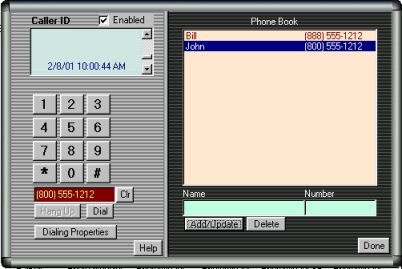

CyberBuddy museum copy · Original site by John M. DeFino · Arthur Tube unofficial continuation. Historical downloads and services may be unavailable.
Continuation
Phone Functions
With CyberBuddy Premium Version , Microsoft Speech Recognition, and certain modems, you can have CyberBuddy perform some phone functions for you.
Note that the phone functions may not work with all modems and operating systems. Also, it will not work if you are currently using the modem for something else, such as when you are online. You must have a telephone attached to the same telephone line as the modem. CyberBuddy will dial the call, but you must talk via the telephone handset. CyberBuddy is not a speaker phone.
Phone Dialing
To bring up the Phone Window say "load phone" or "get phone".
On the left side of the screen there will be a Phone Dialer,
on the Right side, is the Phone Book
| 
|
Normally, the phone functions are used to dial a number with voice input. However, the phone screen can be used to dial a number with key entries.
The phone dialer operates much like a standard telephone. You can click on the numeric digits and the number will appear in the area below the digits. If you make a mistake, click the "Clr" button next to the number display. When the number has been entered, click "Dial" to dial the number. The number will be dialed using the current "Dialing Properties". The dialing properties can be seen by clicking on the "Dialing Properties" button. When the number is dialed, you must pick up a telephone handset connected to the phone line. CyberBuddy will dial the call, but does not act as a speakerphone. CyberBuddy will disconnect from the dialer automatically after about 15 seconds. The great feature here is to be able to dial someone automatically from the Phone Book, by saying their name.
Voice Commands for the Phone Dialer
For: Say:
Help Help
Numeric Entry The Number (0 through 9) (0 is "zero") &nb
Clear Entry Clear, Erase, Delete &nb
Verify the current entry Verify &nb
Dial Dial &nbs
Hang Up Hang up &nb
Close Phone Functions Close Phone, Exit Phone, Shut down phone
Quiet/Stop Quiet, Silence, Stop &nb
To dial the number of someone in the Phone Book, say "Call" or "Get" and the name of that person.
When you are done with the Phone Functions, be sure to close the Phone Window. CyberBuddy will not perform many functions when this window is open. When the Phone Window is open, CyberBuddy is only listening for Telephone Function commands.
Phone Book
The Phone Book serves two purposes:
1. Provides a quick way to ask to call a person with the phone dialer.
2. Provides a name for Caller ID to announce. (see Caller ID)
The Phone Book is a list of names and telephone numbers. To add a number to the list, type the name in the space provided, and the telephone number in the supplied space.
The names will be shown in alphabetical order in the list. You can type the name as Last Name, First Name (note the comma separator) or First Name Last Name. Example: John Smith or Smith, John. If you use the Last Name, First Name option, CyberBuddy will recognize this and will expect to hear First Name Last Name when you ask for the number to be dialed. For Example; You have entered the name as Smith, John. When you ask CyberBuddy to dial the number you would say "Call John Smith".
The phone number entered should contain the area code but no other special dialing codes. The appropriate dialing codes will be added by the "Dialing Properties".
CyberBuddy can tell you who is calling.
You must have CyberBuddy Version 4 and a special Voice Modem for this function to work.
And, of course, you must have Caller ID provided by your phone company.
Check the CyberBuddy Homepage Caller ID FAQ for details on the different modems that will work for Caller ID.
CyberBuddy Premium Version is available on the CyberBuddy Premium Page.
To enable this function, check the "Enabled" box next to Caller ID. If your modem does not support Caller ID, leave this box unchecked.
When there is an incoming call, CyberBuddy will announce the call. The identity of the caller will be announced using information in the following preference:
1 If the person calling is in your Phone Book, he will use the name that you have entered in your Phone Book to identify the caller.
If not,
2. If the caller's name is provided, the name will be given.
If not,
3. If the caller's number is provided, then number will be announced.
If not,
4. A reason, such as "Unidentified Caller" will be given.
The Caller ID information will also be shown in the Caller ID window just above the dialing buttons. This will also list the last 25 callers.
For Questoins on Caller ID, check the FAQ.
 HOME
HOME